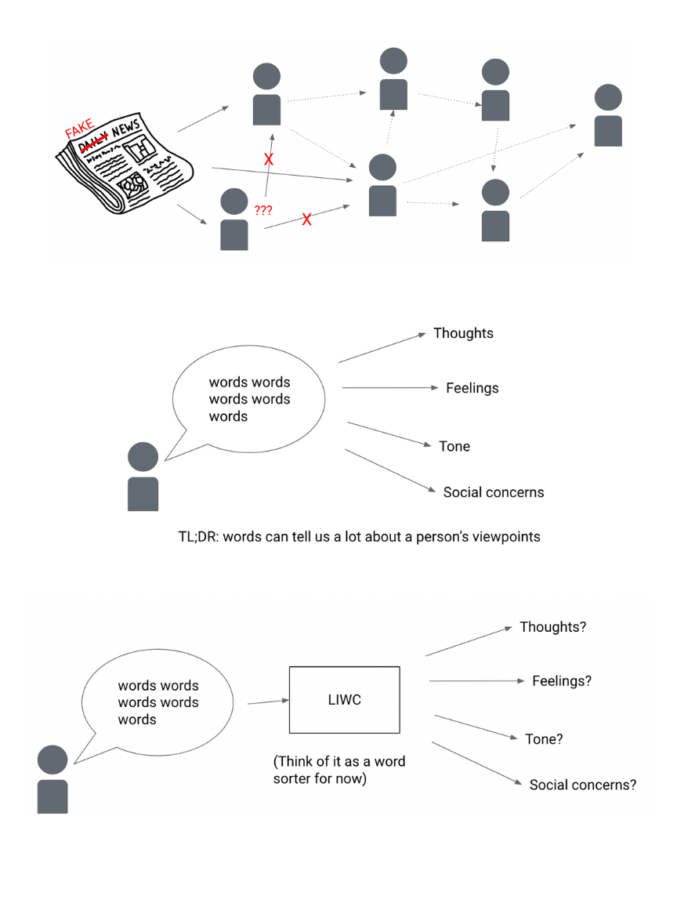
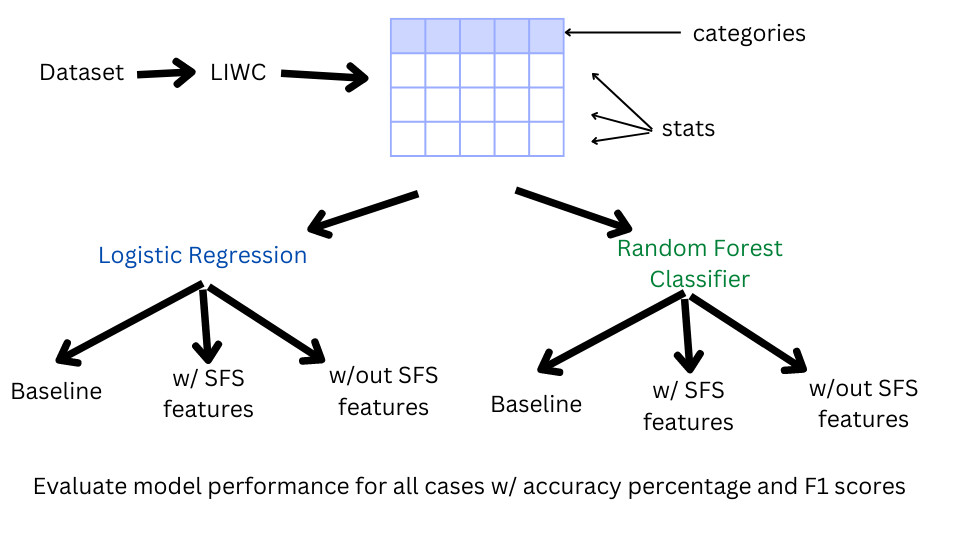

STEM I is a class taught by Kevin Crowthers. Every student in the class conducts an independent research project to learn something new and potentially compete in science fairs. Everyone is taught various skills that will help them succeed in this project, like technical writing, research skills, the engineering design process, and more. I have not done a science fair project before, so though the process has a steep learning curve, I felt that I learned a lot while doing my project and taking this course.
As time passes, the spread of false information has become a significant issue. Since manual fake news detection is expensive and time-consuming, researchers have turned towards using an automated approach. Though there are many automated fake news detection methods, the usage of lexical qualities to determine news accuracy has been underexplored. For this project, the body text for real and fake articles in a dataset was inputed into Linguistic Inquiry and Word Count (LIWC), which can output information about the body text of each article, like word count and the percentage of words in the text that belongs to certain dictionaries. Utilizing machine learning, differing usages of vocabulary between real and fake news are found, allowing for classification between them. Certain types of vocabulary and lexical characteristics were used to adequately distinguish between real and fake news. A linear regression model trained on information with all the categories in LIWC performed accurately and similarly to one that was only trained on selected categories that indicate a significant difference between real and fake news. There is evidence that the lexical characteristics of real and fake news contain notable differences. This list of frequently different word usage, which is a subset of all the dictionaries in LIWC, can most likely be used as a proxy for all the dictionaries in LIWC. Future research could find a method that incorporates the usage of news headlines or combines this approach with more traditional NLP approaches.
Is classification of fake news purely by using the lexical qualities of text effective?
Using Linguistic Inquiry and Word Count (LIWC), the vocabulary of various true and fake articles can be analyzed by machine learning models in order to effectively distinguish between the two. Certain categories of words, specifically those of the dictionaries in LIWC, are more prevalent in fake news compared to real news and vice versa.
Due to the near ubiquitous use of the internet for information, many people are reliant on news in a digital format in order to understand the events that are occurring around them. Though this transition has made information significantly easier to people to access, online news sources are also not as regulated for accuracy (Zhang et al., 2019). Since everyone can create a news page and share its contents, some people have created news sites that are meant to spread false information, more commonly known as fake news. Though the reasons for the creation of these sites can vary, the result is often many people believing in fallacious information, which can have a detrimental effect on society.
Because fake news can distort the reality of a situation and spread quickly due to the increased popularity of social media, it is important to combat it as quickly as possible. This can be done by either preventing the spread of it altogether by shutting down the source or reducing the effects of its spread by showing its lack of authenticity (Amoruso et al., 2020). This project focuses on the latter.
One of the most well-known ways of combatting fake news is by having experts review various claims that commonly appear in news and analyzing each claim’s authenticity. Some examples of this can be seen on websites like FactCheck.org and politifact.com. The major disadvantage of this process is that it is time consuming and requires a lot of money to be fully effective (Rashkin et al., 2017). As a result, even if fact checking sites have found that a certain claim is false, the damage that this claim has caused may have already been done. Because of this, there has been heightened interest in research pertaining to automated fake news detection.
Automated fake news detection is focused on trying to find factors that can be used to distinguish between fake news and real news. Many previous approaches focus on the analysis of the content of the news, but some have been focused on factors with little relation to the actual news content, like web features (Castelo et al., 2019), sentence patterns (Pérez-Santiago et al., 2022), and vocabulary usage (Rashkin et al., 2017). Though there has been research on the differing vocabulary usage between fake news and real news, there isn’t much work related to exclusively using lexical patterns for news classification, as it is often used with another method to complement it. It is important to understand how effective this method of classification is on its own before expanding its use in combination with multiple other methods.
This project primarily focuses on the exclusive use of lexical qualities for automated fake news detection. In order to achieve this, the use of Linguistic Inquiry and Word Count (LIWC) was employed. LIWC can analyze pieces of text and categorize the words used in them into various categories called dictionaries. It is theorized that the types of language used in text can say something about the author’s tone, psychology, and social concerns (Boyd, 2017). Since the motivations of the creation of real news and fake news are inherently different, they could potentially influence the lexical qualities of the writing. The primary motive for the creation of real news is to inform the public about certain events in the real world as accurately as possible, which fake news is made to throw people off and make them believe is something that is not true, often to promote a political agenda. This makes the word usage in news a potential method to classify the difference between those that are real or fake. The work in this paper employs the usage of machine learning in order to observe the effectiveness of this method.
The dataset that was used for this project was Horne 2017 Fake News Data, which contains 123 fake news articles and 128 real news articles, adding up to a total of 251 news articles. All of the news articles in this dataset were published in the year 2016. Every article is then processed through LIWC, which outputs the percentage of words that belong to certain word categories and other lexical information about each text. After this was done, the data was ready to be processed through machine learning.
There are two machine learning algorithms that were utilized in this project: logistic regression and random forest classifier. Both algorithms have been used successfully in classification tasks. 5-fold cross validation was used for all tests.
The first test was a baseline: all of the data from LIWC for each article was inputed into each machine learning algorithm with no altercations.
The second test utilized sequential feature selector (SFS), which, as its name suggests, is a method in machine learning for feature selection. In this case, it will be selecting what categories in LIWC are most effective at distinguishing between real news and fake news. Once these features were selected, the data was filtered down to the categories chosen by SFS and then inputted into each machine learning algorithm.
The third test does the opposite of the 2nd test: it first filters down the data into the features that were not chosen by SFS, then inputed into each machine learning algorithm. This was done to see if SFS was effective for feature selection.
The scikit-learn implementations of logistic regression, random forest classifier, and SFS were used for this project. More information about scikit-learn can be seen in Pedregosa et al.
It was found that random forest classifier performs better in logistic regression in all cases. This result goes in line with research from Couronné et al, which found that random forest classifier usually performed better on classification tasks compared to logistic regression. All models also had slight decreases in model performance when the data was filtered from features chosen by SFS. All models had significant decreases in model performance of more than 10% data when the data was filtered from features NOT chosen by SFS. However, the model performance is still better than random. From this, it can be theorized that the features that were not chosen by SFS do have some effect on identifying if an article is real or not, but they don't have as big of an effect as those chosen by SFS.
It was also observed that by looking at the feature weights of one of the logistic regression models, the features that were most important for distinguishing between fake news and real news can be seen. This clearly shows that some lexical feature are more important for this task than others. For example, the usage of the exclamation mark is a large indicator for fake news while larger word count is a large indicator for real news.
Though the accuracy of the models aren’t perfect, 83% accuracy is sufficient to show that lexical characteristics can indicate if a news article is real or fake. Using SFS, certain features have also been shown to have a larger influence on whether a news article is fake or not.
Amoruso, M., Anello, D., Auletta, V., Cerulli, R., Ferraioli, D., & Raiconi, A. (2020). Contrasting the Spread of Misinformation in Online Social Networks. Journal of Artificial Intelligence Research, 69, 847–879. https://doi.org/10.1613/jair.1.11509
Boyd, R. L. (2017). Psychological Text Analysis in the Digital Humanities. In S. Hai-Jew (Ed.), Data Analytics in Digital Humanities (pp. 161–189). Springer International Publishing. https://doi.org/10.1007/978-3-319-54499-1_7
Castelo, S., Almeida, T., Elghafari, A., Santos, A., Pham, K., Nakamura, E., & Freire, J. (2019). A Topic-Agnostic Approach for Identifying Fake News Pages. Companion Proceedings of The 2019 World Wide Web Conference, 975–980. https://doi.org/10.1145/3308560.3316739
Couronné, R., Probst, P., & Boulesteix, A.-L. (2018). Random forest versus logistic regression: A large-scale benchmark experiment. BMC Bioinformatics, 19(1), 270. https://doi.org/10.1186/s12859-018-2264-5
Horne, B. D., & Adali, S. (2017). This Just In: Fake News Packs a Lot in Title, Uses Simpler, Repetitive Content in Text Body, More Similar to Satire than Real News (arXiv:1703.09398; Version 1). arXiv. https://doi.org/10.48550/arXiv.1703.09398
Pedregosa, F., Varoquaux, G., Gramfort, A., Michel, V., Thirion, B., Grisel, O., Blondel, M., Prettenhofer, P., Weiss, R., Dubourg, V., Vanderplas, J., Passos, A., Cournapeau, D., Brucher, M., Perrot, M., & Duchesnay, É. (2011). Scikit-learn: Machine Learning in Python. Journal of Machine Learning Research, 12(85), 2825–2830.
Pérez-Santiago, J., Villaseñor-Pineda, L., & Montes-y-Gómez, M. (2022). We Will Know Them by Their Style: Fake News Detection Based on Masked N-Grams. In O. O. Vergara-Villegas, V. G. Cruz-Sánchez, J. H. Sossa-Azuela, J. A. Carrasco-Ochoa, J. F. Martínez-Trinidad, & J. A. Olvera-López (Eds.), Pattern Recognition (pp. 245–254). Springer International Publishing. https://doi.org/10.1007/978-3-031-07750-0_23
Rashkin, H., Choi, E., Jang, J. Y., Volkova, S., & Choi, Y. (2017). Truth of Varying Shades: Analyzing Language in Fake News and Political Fact-Checking. Proceedings of the 2017 Conference on Empirical Methods in Natural Language Processing, 2931–2937. https://doi.org/10.18653/v1/D17-1317
Zhang, J., Dong, B., & Yu, P. S. (2019). FAKEDETECTOR: Effective Fake News Detection with Deep Diffusive Neural Network (arXiv:1805.08751). arXiv. http://arxiv.org/abs/1805.08751